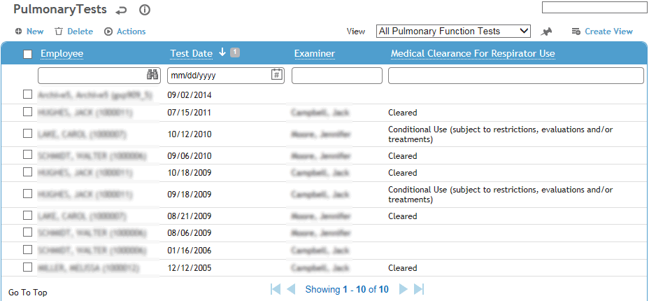
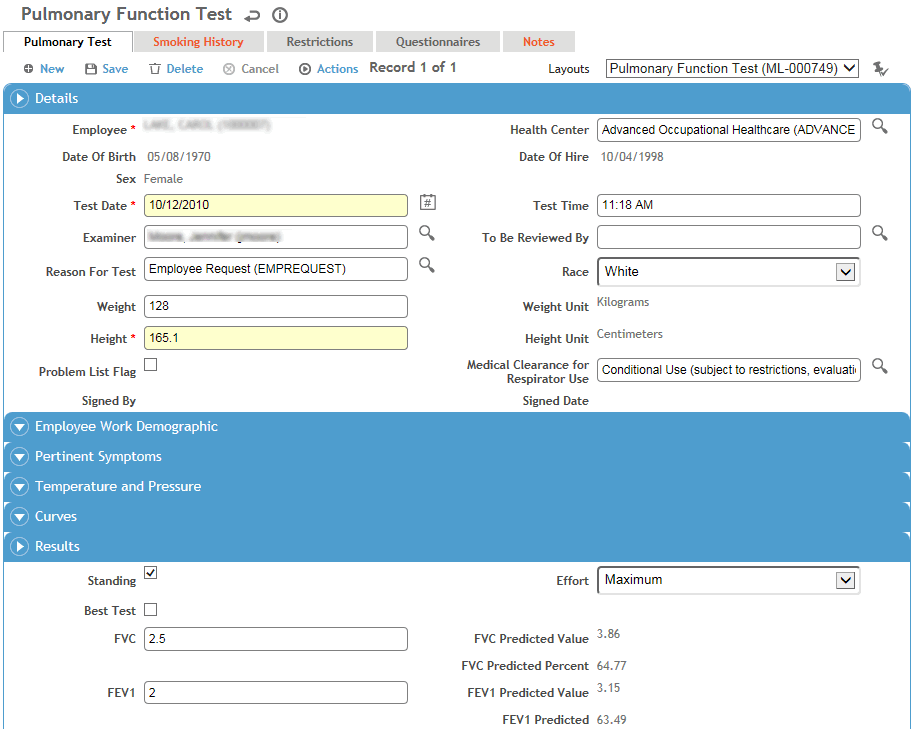
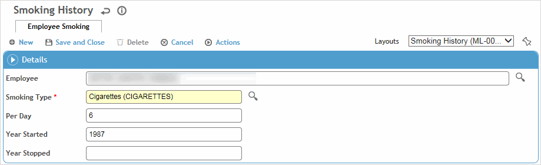

Information about an employee’s pulmonary function can be entered into Cority and monitored. Test results can also be transferred directly from a spirometer (see Transferring Pulmonary Function Test Results from a Spirometer).
The respiratory standard to be used to calculate predicted values must be specified in the system settings. For more information, see Changing Your System Settings.
In the Occupational Health menu, click PFT and use the search list to select an employee.

Click a link to edit, or click New.

If there was more than one test on the same date, use the navigation arrows below the tab names to view the other tests.
On the Pulmonary Test tab, enter information about the employee, the test in general, and results. Most fields are self-explanatory, but you should know the following:
Select the practitioner responsible for reviewing this record. Once that practitioner signs the record (Actions»Sign), the record becomes locked from further edits.
The Height and Race fields must be completed for the calculation of predicted values in the Results section. When you create a new pulmonary test record, height and race are automatically transferred from the previous test record. The Height and Weight defaults to the weight value from the previous PFT record or previous Vital Signs record, whichever is more recent.
Units of measure (height, weight) are set in the system settings; for more information, see Changing Your System Settings.
Indicate if this pulmonary test is to appear on the Problem List (see Working with the Problem List).
If a physical assessment was done prior to the testing, identify any Pertinent Symptoms.
Once the test has been completed, select Clearance for Respirator Use. This status is displayed beside the test entry on the Pulmonary Tests list. If you have the Respirator Fit Testing module, the respirator use clearance status is used by that module.
If the spirometer is not BTPS Corrected, clear the checkbox and enter the Room Temperature and Barometric Pressure; Cority calculates the BTPS Correction.
If there are multiple tests on the same date, indicate which one is the Best Test.
Enter the FVC and FEV1 (in liters), PEF and FEF 25-75% (in liters/second). FET (forced expiratory time), measures the length of the expiration in seconds; enter this result rounded to the nearest tenth of a second.
The FEV/FVC% is populated based on the values entered in FVC and FEV1.
Predicted values are populated based on employee information entered.
The %predicted values are calculated based on values entered in the editable fields (first column).
One of the following Interpretations will appear when the first three editable fields (FVC, FEV1, FEV1/FVC%) are populated:
Normal Spirometry
Severe Restriction
Moderate Restriction
Mild Restrictions
Borderline Obstruction Severe Restriction
Borderline Obstruction Moderate Restriction
Borderline Obstruction Mild Restriction
Severe Obstruction
Moderate Obstructions
Mild Obstruction Severe Restriction
Mild Obstruction Moderate Restriction
If the employee currently smokes or has smoked in the past, record this on the Smoking History tab. Any data entered here is shown on the same tab in Clinic Visit records, if the tab has been added to the Clinic Visit layout.
Click New and select the Type of tobacco smoked, the frequency of smoking and the years when smoking started and stopped. You can enter as many types of tobacco as required (e.g. cigars, cigarettes, pipes, etc.). Click Save.

The Restrictions tab displays all work restrictions recorded for this employee in the Demographic, Medical Chart, Clinic Visits, Case Management, Pulmonary, and Respirator Fit modules. For information about entering a work restriction, see Recording Work Restrictions.
To quickly end all listed restrictions, choose Actions»End All Active Restrictions.
The Questionnaires tab allows you to associate questionnaires with a record. For information about creating and administering questionnaires, see Questionnaires.
The Notes tab allows you to record additional information that does not fit elsewhere in the form. For more information, see Adding Notes to a Form.
Use the Documents tab to link an external file to the record to provide easy access to the file (for more information, see Linking or Importing a Document).
The Letters tab allows you to view past letters or generate new letters to employees. Form letters are stored in the LettersTemplate look-up table. For information about creating letters, see Generating a Letter.